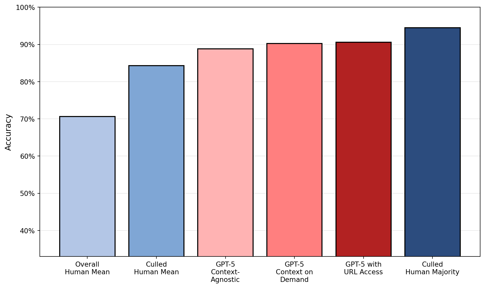
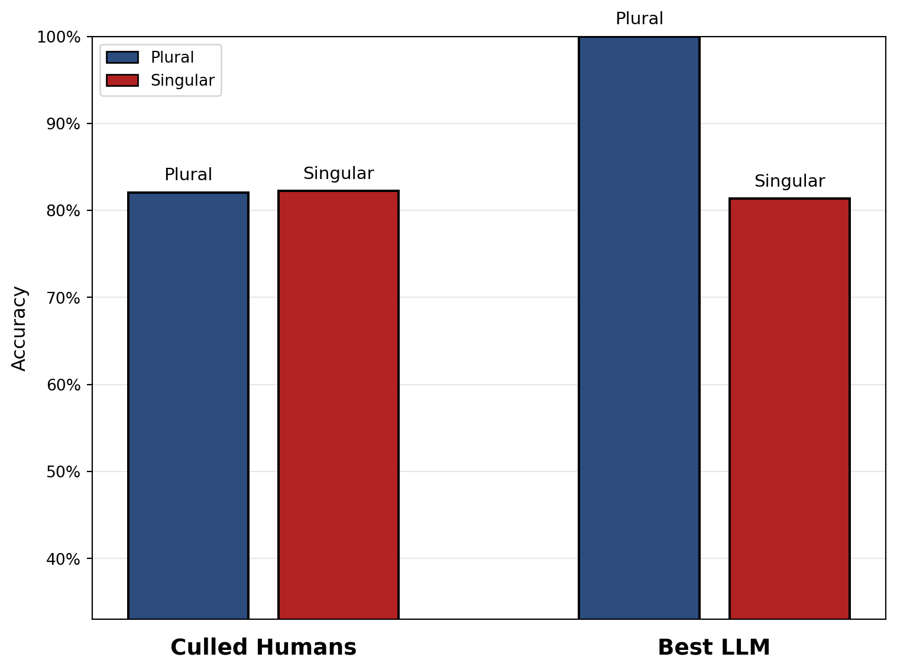
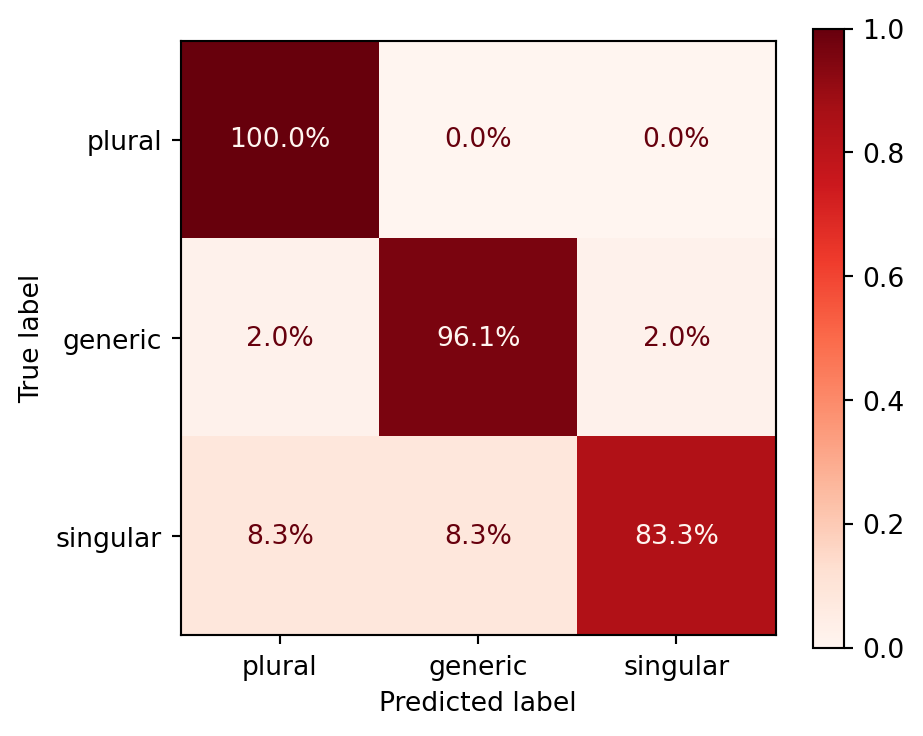
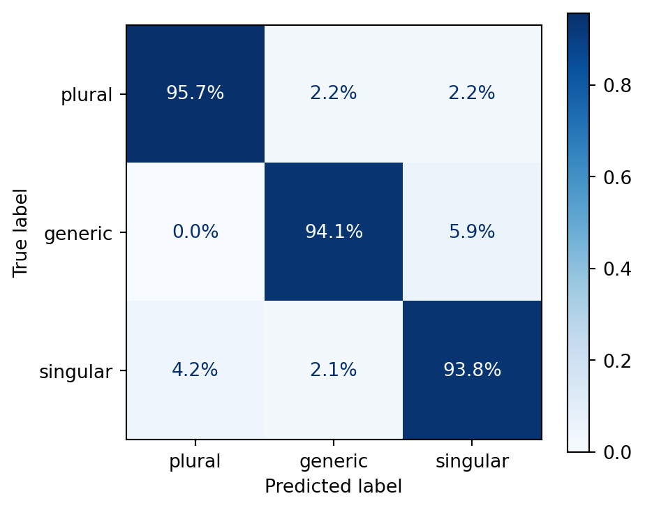
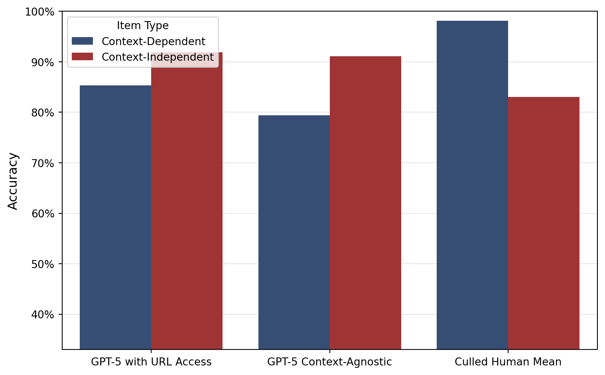
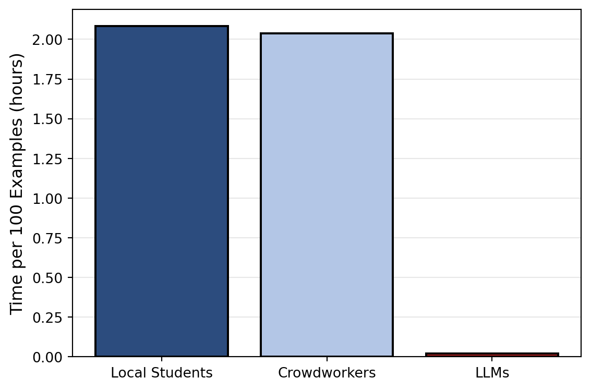

| Participant Group | Accuracy |
|---|---|
| block_Pilot | 96% |
| context-via-permalink_gpt-5 | 91% |
| context-ondemand_zero-shot_gpt-5 | 90% |
| block_A | 90% |
| block_B | 90% |
| block_B | 90% |
| block_C | 90% |
| block_D | 90% |
| block_D | 90% |
| context-agnostic_zero-shot_gpt-5 | 89% |
Computing results and running analyses
To Do:
Tutorials on writing with Quarto (especially referencing and basic formatting)
Identify a few opensource LLMs and integrate two or three (Humans are DONE)
Take class on local LLMs and integrate two or three
Only then integrate all LLM results in Results Section
Reading and adding more to the pile
Write texts for results section
Expand notes into text chunks
Background on they
Conclusion and Intro
Tutorial on exporting to Word
Quick copy-editing by Jessica
Introduction
Large Language Models (LLMs) have not only permeated wider society, they have also begun changing the methodological landscape in the humanities and linguistics more specifically. The promise of the team behind GPT-3 was that “[the days of training special-purpose models are over]” and indeed, LLMs have found a wide variety of uses: LLMs have been used for X, Y, and Z in linguistics where their performance was found to be so and so.
The present work was performed in the context of an older effort starting in a Master’s thesis in 2022. The then-new GPT-3 was tested for its performance at disambiguation uses of they between plural and singular (see below). Coreference resolution as a field precedes LLMs, though it was always limited by the many challenges posed by the nature of coreference, such as real-world knowledge required for textual understanding and context-dependency. What is more, English pronouns have shifted in recent years, most notably with the extension of they as a personal pronoun for people of non-binary gender, but also with the growing visibility of neologistic pronouns. LLMs showed promise because they exhibited context-sensitive performance in several areas. While its performance with singular they in the dataset of the Master’s thesis was unsatisfactory, the same test was later repeated using newer models. When Anthropic’s LLM Claude Sonnet reached recall of X and precision of Y on the same dataset in late 2024, it was hypothesized that its performance had been human-like. To assess this reliably and accurately, the Research Question was formulated: “To what extent are number-annotations of authentic uses of they by LLMs reliable when compared to trained human annotators?”
To answer this question, three levels of performance quality were defined, as expressed by the following three hypotheses:
– Hypothesis 1: The most accurate number-disambiguator of they is going to be an LLM.
– Hypothesis 2: The most accurate LLM at number-disambiguating they is going to perform at a higher accuracy than the mean human accuracy.
– Hypothesis 3: The performance of the most accurate LLM is not going to be significantly worse at rare and innovative uses of they than the mean human performance.
The three hypotheses were defined to capture the extent to which LLM performance could potentially be comparable to that of humans. Even if Hypothesis 1 is not confirmed by the results, hypothesis 2 would still attest that LLMs largely outperform humans. If that were not confirmed either, hypothesis 3 would still justify the use of LLMs for semantically-complex tasks such as resolution of innovative pronouns.
Background
Three kinds of they
(plural, generic, singular)
LLMs as (linguistic) annotators
Data
First, we need to import all raw data by calling the relevant script. The raw data are shaped like so:
- Human participants have a dictionary each in which every data point, their annotation, and (optional) their comment is found.
- Human participants are put into 5 blocks, blocks A-D and the group of pilot participants
- LLMs come in three different groups: commercial, open source, and local
- in each LLM group, there are different combinations of LLMs and prompting strategies, of which several runs may exist
- each combination of LLM and prompting strategy is treated as a participant.
- For every run of that combination, a dictionary is found in which every data point is found with their annotation and their full response saved like human annotators’ comments
– Point about MA-era-dataset being limited (number of singular they examples; context-independence)
174 authentic uses of they (Reddit) Context-(in)dependent 56–59 for plural/generic/singular (do this dynamically & as a table)
Mention 10 intro examples that were cherry-picked for balance and had a precise reasoning behind the solution and were identical for all human participants. Clarify if those 10 examples were part of the test set for LLMs (shouldn’t have been but need to ensure).
Randomly sampled for each participant to avoid bias
System of blocks with overlap
Point out that dataset is available
To illustrate, the variable name commercial_llm_responses has the entry “context-agnostic_zero-shot_claude-opus-4-1-20250805”, which tells us the prompting strategy (context-agnostic-zero-shot) and the LLM with its dated version (claude-opus-4-1-20250805). This entry has three runs saved. Each run is of the type “dict” and has 174 data points saved with their answers as keys and values. This number corresponds to the number of data points in the original test set.
Participants
Human annotators are organized in four different blocks due to limits to study duration, i.e. avoiding influence from participant fatigue. Instead of testing everyone with the full 174 data points from the test set, every block of participants received a shared of data points that was identical among all of them and one part which was only solved by their respective block. The distribution of examples among the blocks was done randomly while ensuring within-block balance of antecedent types.
Blocks A-D have 11, 12, 10, and 8 participants, respectively. The piloting group had 7 participants. In terms of data points, every participant regardless of their block received 48 examples to annotate. This ensured a study duration of roughly one hour per participant.
Demographics
Women, age range (+ bibliographic justification)
Expertise
Explain issue with Prolific setup. Explain possibility of post-hoc culling the participants by attentiveness to still get appropriate data.
LLMs
Models
(so far) only the largest commercially available LLMs from the Claude & GPT family
Prompting Strategies
Context-agnostic or with URL which only works for commercial models
Methods
Explain basic GT comparison
Justify choice of accuracy (F1 doesn’t necessarily make sense over accuracy as the three classes are balanced. Also mention that MCC was considered.)
Confirmatory and quasi-experimental study
Results
Hypothesis 1
The first hypothesis aims to test if any LLM-based approach would yield the highest overall performance.
Hypothesis 2
| Group | Accuracy |
|---|---|
| Non-Pilot Humans | 68.5% |
| Pilot Humans | 80.8% |
| Non-Linguists | 69.0% |
The difference between the crowdworkers and the local student pilot participants is not statistically significant (p = 0.059, α = 0.05).
The group of culled participants has 20 participants, of which two are local students and 18 are crowdworkers.

Results by label
Singular vs Plural



TOST (independent samples, Welch)
- α = 0.050, Δ = 0.020
- t_lower=-0.196, p_lower=0.5769 (NI decision uses this)
- t_upper=-1.554, p_upper=0.0675
Decision: Non-inferiority not established.
Context-(in)dependence
| Group | Context-Dependent | Context-Independent |
|---|---|---|
| Culled Human Mean | 90.0% | 77.5% |
| GPT-5 Context-Agnostic | 79.4% | 91.1% |
| GPT-5 with URL Access | 85.3% | 91.9% |

Performance with innovative forms of they
Since I care about recall of sg. and gen. they for the application in later research, the recall for those two should be featured apart for humans & LLMs
Projection onto naturalistic data
It might make sense to apply the per-class performance measures to a hypothetical test set with naturalistic frequency splits (take from own data) to then generate MCC and get an estimation of how well the different participants would do on naturalistic data. This will address the lingering question if the artificial selection of data points skewed the results or hid anything about the truth
This will be an important point for the conclusion.
Cost


- The cost of crowdworkers was inflated in this study due to filtering inattentive participants only post-hoc and not being able to tell the meaning of “educated in English language” before carrying out the study. Appropriate numbers were obtained thanks to the culling. This means in turn that the responses of 56.1% of crowdowkers were disregarded and their cost was spent fruitlessly.
Discussion
L1 Crowdworkers vs Local L2 Students
The results showed that this task in particular is not automatically solved better by native speakers than by informed L2 speakers. The latter performed at 81.0% as opposed to the 68.0% achieved by native speakers. This is not solely due to the L1 vs L2 status but also a question of competence. The local students had been selected based on their previous high academic achievements and specific knowledge of English linguistics of gender. The difference in performance is not, however, statistically significant. Still, it shows that at this level the native speaker status should no longer be taken as a prerequisite for (annotation) work in this and similar fields or activities. Local students are also preferable due to ethical and practical reasons as communication is easier and there are better mechanisms in place to ensure fairness and research ethics.
Hypothesis 1
Table 1 reveals that the group of top performers is populated by more humans than LLMs, although most top performances cluster around the 90% mark. To directly address Hypothesis 1, the top performer is not an LLM but indeed a human. This participant was furthermore from the pilot participants recruited from the local student body. Hypothesis 1 is therefore rejected.
Hypothesis 2
The second Hypothesis aims to test if LLM accuracy at the task outperforms the mean human accuracy. As the overall goal of this research is to assess if LLMs could plausibly replace proper student assistants, it makes sense to define “mean human accuracy” more closely. The participants were recruited more liberally than a standard selection process for a student assistant position. They were recruited from only two seminar groups and were prioritized by availability. The crowd workers self-selected by ticking a box that said they had an education in “English language”, without specifying their level of expertise and, in some cases, not actually having studied linguistics, judging by their answers to the screening. To get an indication of what level of performance one might expect from an actual student assistant, culling of the data is necessary. For the purpose of this study, a second human group of participants is formed by removing inattentive annotators and only taking the top half of the remaining ones. Inattentiveness can be formalized in terms of context-dependent performance, i.e. if their performance is at or below 33% when context is necessary to understand an example.
Figure 1 reveals that there is a marked difference between the overall and the culled human mean. This shows once again that crowdworkers as a whole are not a reliable resource for annotation work. The culled human mean, which is supposed to approach the performance level of a specialized student assistant, still falls short of the best three LLMs’ performance. There, it seems that the prompting strategy had only a minor impact, improving performance by just a few percent. The strongest combination of LLM and prompting strategy, GPT-5\\nContext-\\nAgnostic, shows a performance that is , however, not significantly better than the culled human mean at p = 0.454498291015625, α = 0.05 according to a McNemar’s test. Hypothesis 2 can therefore not be confirmed. It is still remarkable that the best result of the study is achieved by taking the majority vote of the culled human group. Applying this to a real-world setting, it suggests that teams of experts are still the strongest at this kind of annotation task.
Hypothesis 3
Hypothesis 3 aims to show non-inferiority of LLMs at
Conclusion
The results are mixed and it is not straightforward to say if LLMs have truly attained human level at this particular task.
– Results show that semantically complex annotation in linguistics may be done by LLMs at much cheaper cost. The human-machine margin in cost arguably more than compensates the margin in quality.
– Potentially applicable to any other variable dependent on situational, pragmatic, … context, i.e. ‘distant reading’
– Similar research tends to confirm this finding.
– However, some cursory analysis of LLM errors shows that LLMs are prone to being fooled by context.
– Also, bias towards standard English still a limitation, i.e. innovative forms like specific singular they at disadvantage.
– Only tested large commercial LLMs, a limitation common in the literature so far.
– To do:
– – Further qualitative analysis of human & LLM responses
– – Application and evaluation of open source LLMs (replicability!), N-shot prompting, fine-tuning
– – Analyze uses of they in various corpora, potentially uncovering the history of its change and diffusion – – Threat to entry-level / student assistant positions?
– – Environmental impact concerns?